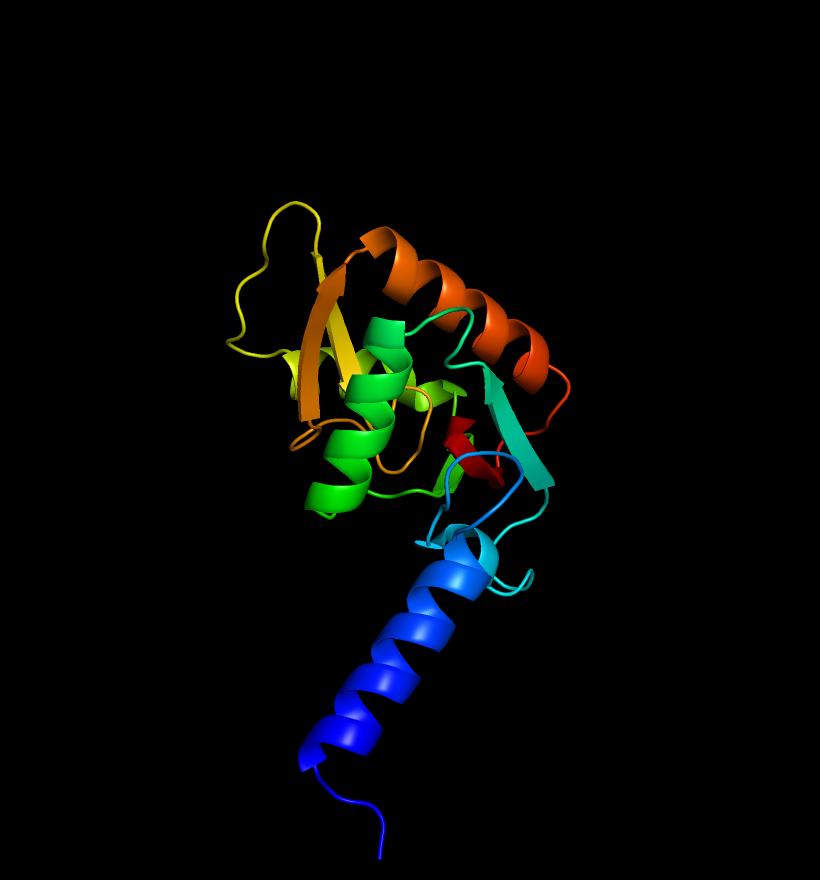

01
Sonar tracks the biofilm build ups
Drag the probe along the pipe, or use the arrow keys.
SimulatedEchoes are not measurements

Biofilm in data-centre cooling
PredictionNucB structure, Boltz 2.2.1
01
02
03
04
And the cells regrow anyway.
IllustrationNot a recording
Our solution
01
Drag the probe along the pipe, or use the arrow keys.
SimulatedEchoes are not measurements
02
Genetic sequence modified to boost its thermostability
IllustrationThe intended workflow, not a readout
The demo
Every structure below was predicted by Boltz 2.2.1 and every ranking by ThermoMPNN, read from the saved run. Nothing here has been tested at a bench.
Drag to turn. Scroll to zoom. Arrow keys work too.
PredictionBoltz 2.2.1
1
Bacterial species
Bacillus licheniformis
2
EPS composition
eDNA, polysaccharides, proteins
3
Target biomolecule
Extracellular DNA (eDNA)
4
Degrading enzyme
NucB (extracellular nuclease)
5
FASTA sequence
142 amino acids
Round two
ThermoMPNN scanned every single substitution in the folded chain and ranked them. Mutations at the five catalytic residues were excluded before ranking. Each survivor below was folded again by Boltz 2.2.1.
Reading local structure files…
Loading structure…
Confidence / B-factor scale
Colouring uses stored per-atom B-factor values when available. Values are not recalculated.
Drag to rotate. Use the middle mouse button or Ctrl+drag to pan. Scroll to zoom.
Reading the saved run…
This is a preliminary model selection from folded candidates, not a validated ranking, stability score, comparison with training records, or measured result.
PredictionddG, confidence and displacement are model output, not measurements
Video to come
The scientist
The scientist explains the run: which design was chosen, and why.